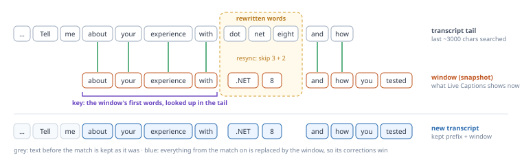
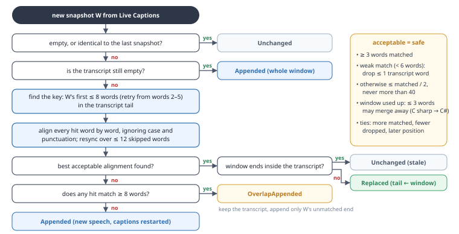
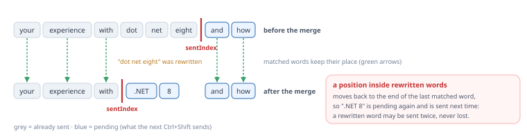

این مهمترین قطعهی سیستم است. ورودیاش دو چیز است: رونوشت فعلی جلسه (یک رشتهی بلند و رو به رشد) و پنجرهی تازهای که از Live Captions خوانده شده. خروجیاش رونوشت جدید است، بهاضافهی یک «نقشه» که میگوید هر موقعیت در رونوشت قدیم حالا کجای رونوشت جدید است.
پنجره همیشه با کلمههایی شروع میشود که رونوشت قبلاً دیده است (مگر اینکه گفتوگوی تازهای شروع شده باشد). پس کافی است جای شروع پنجره را در انتهای رونوشت پیدا کنیم، کلمه به کلمه جلو برویم تا مطمئن شویم واقعاً همان متن است، و از آن نقطه به بعد رونوشت را با پنجره عوض کنیم. چون پنجره جدیدتر است، اصلاحهای Live Captions خودبهخود اعمال میشوند.

Don't, و dont برابرند. جای هر کلمه در متن اصلی هم نگه داشته میشود.
هر جا الگوریتم مطمئن نیست، طرف «تکرار» را انتخاب میکند. همترازیای که فقط با چند کلمهی رایج جور شده، حق ندارد بیش از یک کلمه از رونوشت را دور بریزد. پنجرهای که کاملاً داخل رونوشت است (snapshot کهنه) هیچ چیزی را تغییر نمیدهد. همپوشانیای که نمیشود آن را تا انتها همتراز کرد، رونوشت را دست نمیزند و فقط انتهای جدید پنجره را اضافه میکند. نتیجهی بدترین حالت، چند کلمهی تکراری است؛ نه یک جملهی گمشده.
بقیهی سیستم با موقعیتهای عددی در رونوشت کار میکند: sentIndex (تا کجا فرستاده شده)، جای
برچسبهای فایل جلسه، و جای برش هر ارسال در حال انجام. وقتی ادغام متن را عوض میکند، همهی این عددها باید جابهجا
شوند. نتیجهی هر ادغام جفتهای «انتهای کلمه در متن قدیم ← انتهای همان کلمه در متن جدید» را نگه میدارد و
MapIndex هر موقعیت قدیمی را با آن ترجمه میکند.

یک ظرافت کوچک: اگر بعد از کلمهی جورشده علامتی مثل نقطه بوده، موقعیت بعد از آن علامت میماند تا جملهی بعدی با
. شروع نشود.
| حالت | رفتار |
|---|---|
| رشد عادی پنجره | نتیجهی Replaced؛ فقط کلمههای تازه اضافه میشوند |
| اسکرول شدن خطهای بالا | کلید از اول پنجره در وسط رونوشت پیدا میشود؛ متن قدیمی دست نمیخورد |
| کلمهی آخر بازنویسی شد | همترازی آن را جذب میکند و نسخهی تازه جایگزین میشود |
| چند کلمه یکی شد | عبارت I I I I به II و C sharp به C#؛ حداکثر ۳ کلمه اجازهی «ادغام شدن» دارند |
| عبارتهای تکراری در گفتار | جای درست با «بیشترین تطابق، سپس کمترین دورریز، سپس جای بعدتر» انتخاب میشود |
| پاک شدن یا راهاندازی دوبارهی Live Captions | هیچ همپوشانیای نیست؛ نتیجهی Appended و کل پنجره اضافه میشود |
| همان snapshot دوباره | نتیجهی Unchanged بدون هیچ کاری |
۲۸ تست واحد برای حالتهای بالا، و بازپخش دو ضبط واقعی (چهار و ده دقیقه) از Live Captions. در ضبط دهدقیقهای با ۱۱ اسکرول، هر کلمهای که Live Captions نشان داده بود در رونوشت ماند، بدون تکرار.
The merger turns successive snapshots of a rolling window into one transcript. It normalizes words (lower case, no punctuation), takes the window's first few words as a key, finds it in the last 3,000 characters of the transcript, then aligns word by word, resynchronizing over small rewrites. Everything from the match on is replaced by the window, so corrections win. Safety rules decide the uncertain cases and always prefer duplicating a few words to losing any. Each merge also returns a position map, so sentIndex and every other pointer stay valid.